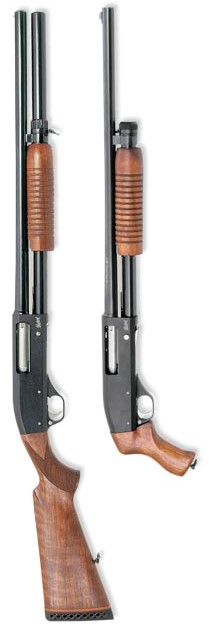

Оружейный салон
|
Оружие Один из видов охотничьего оружия – гладкоствольное. Как ясно из названия, внутри такого оружия нет насечек.По принципу заряда гладкоствольное охотничье ружье бывает пулевым, дробовым и комбинированным.Первые гладкоствольные ружья значительно отличаются от их современных собратьев. Однако и тогда, и теперь главная задача такого оружия – охота и развлекательная стрельба. Чаще всего гладкоствольное охотничье оружие стреляет дробью.В нашем каталоге представлены ружья как отечественных, так и зарубежных производителей. |
 |
Патроны На первый взгляд тема гладкоствольных патронов 12 калибра совсем не предмет для печатной статьи. Здесь давно все сказано многочисленными оружейными гуру и отшлифовано ведущими патронными фирмами до такой степени совершенства, что рядовому потребителю можно и не заморачиваться.И, тем не менее, вопросы возникают. Причем основной поток вопросов от покупателей поступает, когда на витрине богатый выбор, когда нужно купить несколько пачек патронов 12 калибра для разных охот, когда все стоят в плотной очереди коллег-единомышленников в предвкушении предстоящих охотничьих радостей. То есть накануне открытия охоты и в течение охотничьего сезона. Продавцы-консультанты в это время, естественно, работают скорее продавцами, чем консультантами и магазин больше напоминает шиномонтаж во время первых заморозков, чем приличную респектабельную фирму. |